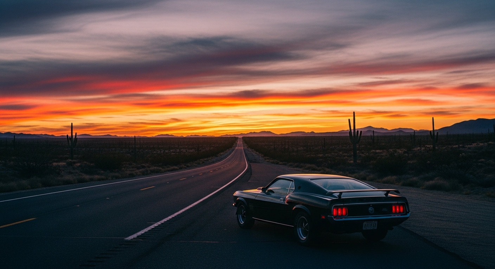

← Gabriel Brosius
Music Video
Drink Me — Tiny Desk Live
2025 — Director / Writer

2025 — Live Performance
Drink Me — Tiny Desk Live
Director / Writer
A live Tiny Desk-style performance of Drink Me.
Video